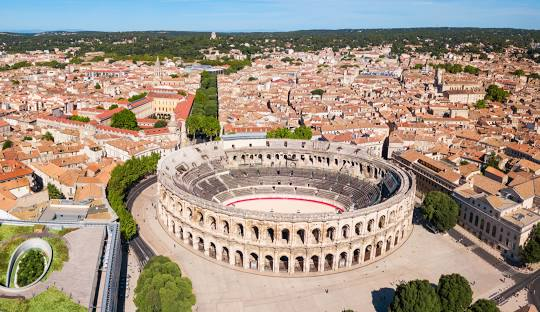

Itinerario del Día
El tercer día comienza con la salida desde Montpellier hacia Lyon. Durante el trayecto, harás una parada en Nîmes para explorar algunos de sus lugares más emblemáticos. Al llegar a Lyon, tendrás tiempo para explorar la ciudad antes de descansar en tu alojamiento.
Ruta y tiempo de viaje
- Montpellier → Nîmes: 55 km (45 minutos)
- Nîmes → Lyon: 245 km (2h 30min)
- Distancia total: 300 km
- Tiempo total: 3 horas + paradas
Parada en Nîmes
Nîmes es una ciudad con una rica herencia romana y hermosos paisajes. Aquí tienes algunas recomendaciones para visitar:
Qué ver en Nîmes
- Jardins de la Fontaine: Uno de los primeros parques públicos de Europa con fuentes, canales y ruinas romanas
- Templo de Diana: Ruinas romanas fascinantes dentro de los jardines
- La Pradier Fountain: Fuente monumental en la Esplanade Charles-de-Gaulle
- Centro histórico: Calles estrechas con edificios históricos y cafés acogedores
- Anfiteatro romano: Si tienes tiempo extra, uno de los mejor conservados

Vista de Nîmes, famosa por su herencia romana y monumentos históricos.
Llegada a Lyon
Lyon es una ciudad histórica y culturalmente rica, conocida por su gastronomía y su arquitectura. Aquí tienes algunas recomendaciones para visitar:
Qué ver en Lyon
- Vieux Lyon: Casco antiguo declarado Patrimonio de la Humanidad por la UNESCO
- Basilique Notre-Dame de Fourvière: Basílica con vistas panorámicas de la ciudad
- Parc de la Tête d'Or: Hermoso parque urbano con lago y zoológico gratuito
- Musée des Confluences: Museo de ciencia y antropología con arquitectura moderna
- Les Halles de Lyon Paul Bocuse: Mercado cubierto para probar la gastronomía local

Panorámica de Lyon, ciudad Patrimonio de la Humanidad y capital gastronómica de Francia.
Mapa de la Ruta
Alojamiento
Hotel en Lyon
- Dirección: 260 Avenue Jean Monnet, 69500 Bron, Francia
- Check-in: Miércoles, 16 de julio de 2025 (16:00 - 23:30)
- Check-out: Jueves, 17 de julio de 2025 (hasta las 12:00)
- Habitación: Habitación Familiar para 3 personas
- Teléfono: +33 4 72 15 65 60
Condiciones de Cancelación
- Cancelación gratuita: Hasta las 00:00 del día de llegada
- Cargo por cancelación tardía: 94,50 € (precio total de la reserva)
Desglose del Precio
- Habitación Familiar: 94,50 €
- Impuesto municipal: 4,95 €
- Precio total: 99,45 €
Gastos Estimados
- Peajes: 15 € (estimado para la ruta)
- Gasolina: 30 € (300 km, consumo 7l/100km, 1.40€/l)
- Alojamiento: 99,45 €
- Comida y cena: 100 €
- Total estimado del día: 244,45 €